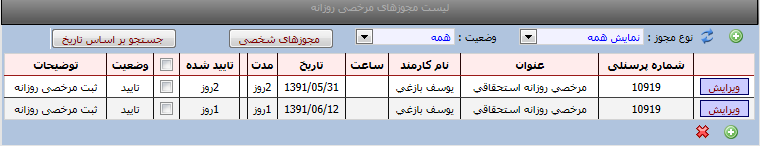

مرخصی روزانه
امکانات:
نمایش لیست درخواستهای مرخصی روزانه
ثبت، ویرایش و حذف درخواستهای مرخصی روزانه
روش ثبت یک درخواست :
ابتدا کلید جدید را می زنیم سپس مطابق تصویر از منوی عنوان مجوز ،مجوز مورد نظر را انتخاب و از منوی تاریخ ،تاریخ شروع درخواست وخاتمه درخواست را انتخاب می نماییم وبا کلید ثبت درخواست تایید می نمایید.
روش حذف یک درخواست:
پس از ثبت یک درخواست تا زمانیکه درخواست بوسیله مدیر تایید نشده باشد امکان حذف وجود دارد .
ابتدا گزینه لیست درخواستها را انتخاب سپس کلید ویرایش را زده و کلید حذف را می زنید تا درخواست از لیست حذف گردد.
نکته :
در صورت مشاهده پیغام سقف درخواست مجاز شما منفی ..... می باشد به این معنی است که بدلیل منفی بودن مرخصی شما تا به امروز مجاز به درخواست مرخصی نیستید. (تنظیم شده بوسیله کاربر admin برنامه در تنظیمات سیستم
کلید جستجو براساس تاریخ : با کلید جستجو براسا تاریخ می توانید درخواستها را براساس تاریخهاییی که وارد می نمایید مشاهده نمایید.
کلید وضعیت :بوسیله این کلید می توانید درخواستهای ارسال شده /رد شده /تایید شده و همه درخواستها را انتخاب نمایید.
